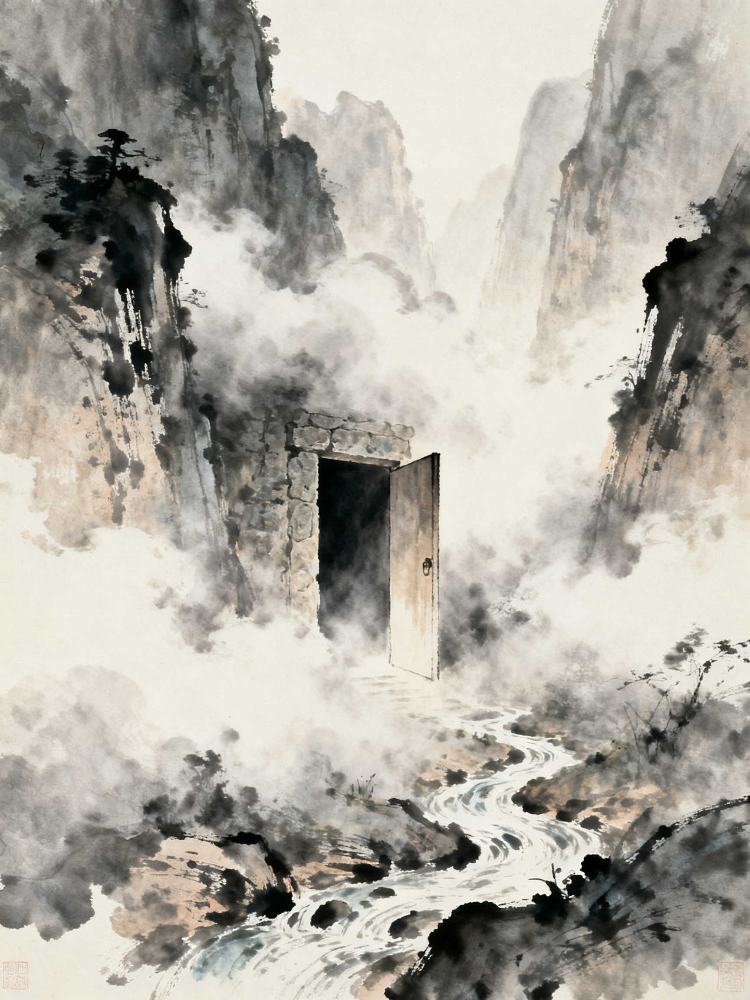
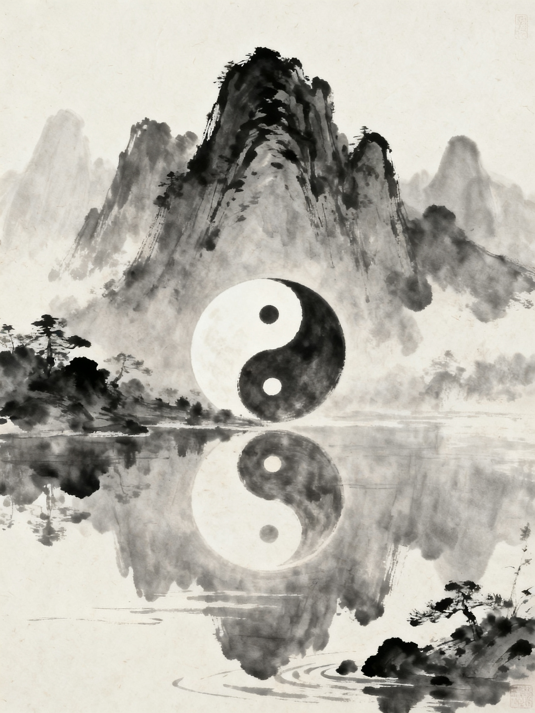
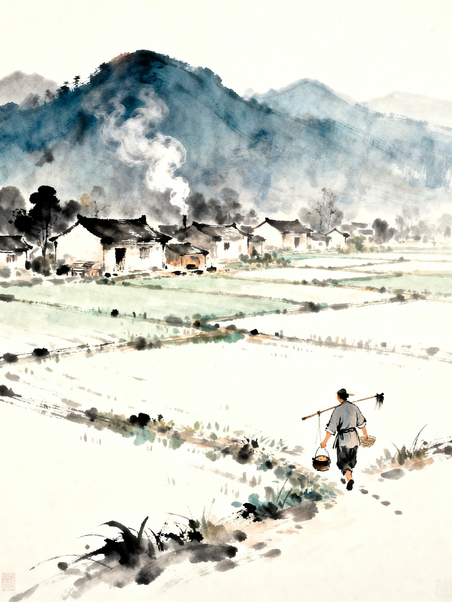
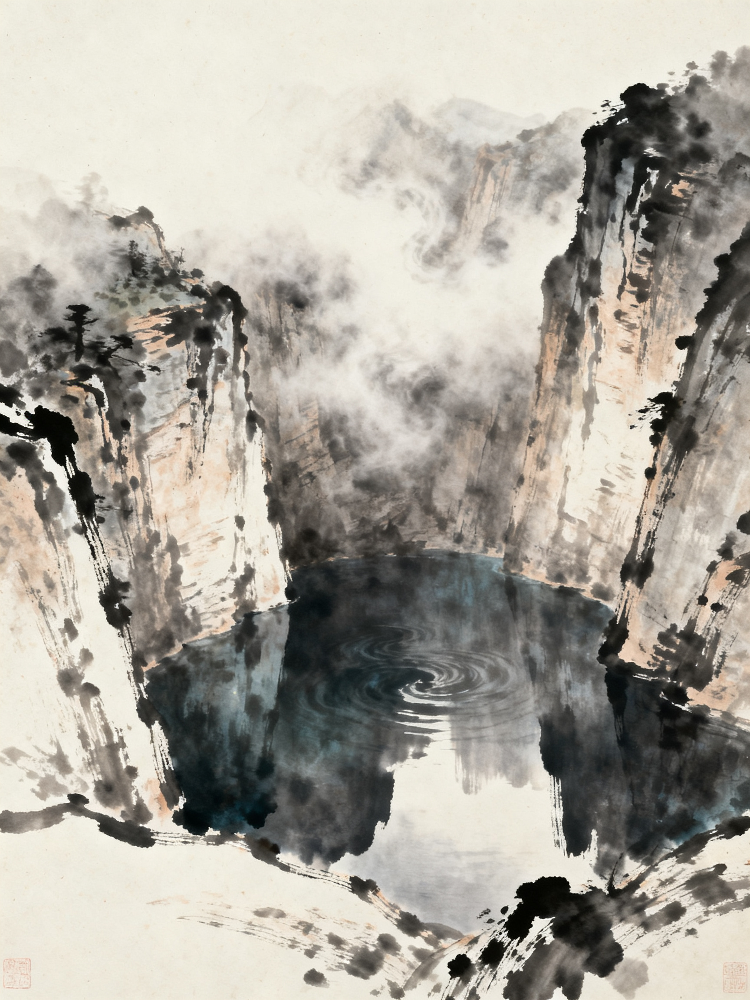
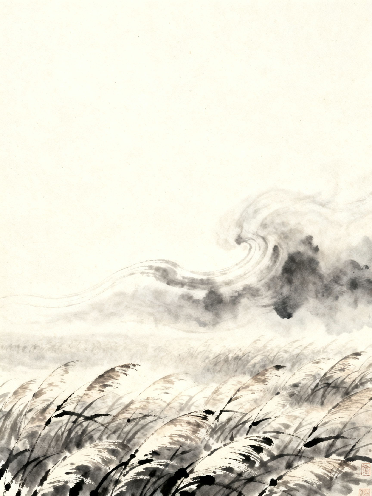

道德经
水 墨 绘 本 · 前 五 章
老子

第 一 章
体 道
道可道，非常道；名可名，非常名。
无名，天地之始；有名，万物之母。
故常无欲，以观其妙；常有欲，以观其徼。
此两者，同出而异名，同谓之玄。
玄之又玄，众妙之门。
可以用言语表述的道，就不是恒常的道；可以用名称界定的名，就不是恒常的名。无形无名，是天地的本始；有形有名，是万物的根源。玄妙之中又玄妙，这是一切奥妙的门径。
道的不可言说，有无同出，众妙之门

第 二 章
养 身
天下皆知美之为美，斯恶已；
皆知善之为善，斯不善已。
故有无相生，难易相成，长短相形，
高下相倾，音声相和，前后相随，恒也。
是以圣人处无为之事，行不言之教。
万物作而弗始，生而弗有，为而弗恃，功成而弗居。
夫唯弗居，是以不去。
天下人都知道美之所以为美，丑的观念就产生了；有无相生，难易相成，这是永恒的规律。圣人以无为处世，生养万物而不据为己有，功成而弗居。正因不居功，功绩反而长存。
相对相生的辩证，无为而治，不居功

第 三 章
安 民
不尚贤，使民不争；
不贵难得之货，使民不为盗；
不见可欲，使民心不乱。
是以圣人之治：虚其心，实其腹；
弱其志，强其骨。
常使民无知无欲，使夫智者不敢为也。
为无为，则无不治。
不推崇贤能，百姓便不争夺；不珍视稀有之物，百姓便不偷盗。圣人之治：净化心志，满足温饱，强健体魄。以无为的态度行事，就没有治理不好的。
无为而治的政治理想，虚心实腹

第 四 章
无 源
道冲，而用之或不盈。
渊兮，似万物之宗；
湛兮，似或存。
吾不知谁之子，象帝之先。
道体空虚无形，作用却无穷无尽。深远啊，似万物之宗主；幽隐啊，似有似无、似存似亡。不知它从何而生，似乎在天帝之先就已存在。
道的虚体与本源，先于天地而存在

第 五 章
虚 用
天地不仁，以万物为刍狗；
圣人不仁，以百姓为刍狗。
天地之间，其犹橐籥乎？
虚而不屈，动而愈出。
多闻数穷，不若守于中。
天地无所谓仁慈，对待万物如同祭祀的草狗，任其自然生灭。天地之间，不正像一个风箱吗？虽空虚却不穷竭，越是鼓动越有风产生。见多识广反而易穷，不如保持虚静中正。
天地不仁的客观，橐籥之喻，守中之道
☯
玄之又玄，
众妙之门。
—— 道德经 · 水墨绘本 · 完 ——
◀ 上一页
1 / 7
下一页 ▶
← → 方向键 / 点击按钮翻页